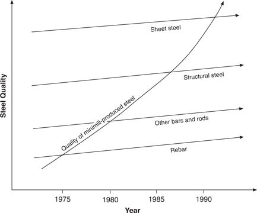

Minimill steel making first became commercially viable in the mid-1960s. Employing widely available and familiar technology and equipment, mini-mills melt scrap steel in electric arc furnaces, continuously cast it into intermediate shapes called billets, and then roll those into products such as bars, rods, beams, or sheets. They are called minimills because the scale at which they produce cost-competitive molten steel from scrap is less than one-tenth of the scale required for an integrated mill to produce cost-competitive molten steel from iron ore in blast and basic oxygen furnaces. (Integrated mills take their name from the integrated process of transforming iron ore, coal, and limestone into final steel shapes.) Integrated mills and minimills look much the same in their processes of continuous casting and rolling operations. Scale is the only difference: The output of efficiently sized blast furnaces requires that integrated mills’ casting and rolling operations must be much greater than those of the minimills.
North America’s steel minimills are the most efficient, lowest-cost steel makers in the world. In 1995, the most efficient minimill required 0.6 labor-hours per ton of steel produced; the best integrated mill required 2.3 labor-hours. In the product categories in which they compete, the average minimill can make product of equivalent quality, on a fully costed basis, at about a 15 percent lower cost than the average integrated mill. In 1995, it cost about $400 million to build a cost-competitive steel minimill and about $6 billion to build a cost-competitive integrated mill. 4 In terms of capital cost per ton of steel making capacity, integrated mills are more than four times as costly to build. 5 As a result, minimills’ share of the North American market has grown from nothing in 1965 to 19 percent in 1975, 32 percent in 1985, and 40 percent in 1995. Experts predict they will account for half of all steel production by the turn of the century. 6 Minimills virtually dominate the North American markets for rods, bars, and structural beams.
Yet not a single one of the world’s major integrated steel companies to date has built a mill employing minimill technology. Why would none of them do something that makes so much sense? The explanation forwarded most frequently by the business press, especially in the United States, is that the managers of the integrated companies are conservative, backward-looking, risk-averse, and incompetent. Consider these indictments.
Last year, U.S. Steel Corp. closed fifteen of its facilities, claiming they had become “noncompetitive.” Three years ago, Bethlehem Steel Corp. shuttered major portions of its plants in Johnstown, PA, and Lackawanna, NY…. The closing of these major steel complexes is the final dramatic concession from today’s chief executives that management has not been doing its job. It represents decades of maximizing profits to look good for the short term. 7
If the U.S. steel industry were as productive in tons per man-hour as it is in rhetoric per problem, it would be a top-notch performer. 8
Surely there is some credibility to such accusations. But managerial incompetence cannot be a complete answer for the failure of North American integrated mills to counter the conquest by minimills of vast portions of the steel industry. None of what most experts regard as the best-managed and most successful of the world’s integrated steel makers— including Nippon, Kawasaki, and NKK in Japan; British Steel and Hoogovens in Europe; and Pohang Steel in Korea—has invested in minimill technology even though it is demonstrably the lowest-cost technology in the world.
At the same time, in the last decade the management teams at integrated mills have taken aggressive steps to increase mill efficiency. USX, for example, improved the efficiency of its steel making operations from more than nine labor-hours per ton of steel produced in 1980 to just under three hours per ton in 1991. It accomplished this by ferociously attacking the size of its workforce, paring it from more than 93,000 in 1980 to fewer than 23,000 in 1991, and by investing more than $2 billion in modernizing its plant and equipment. Yet all of this managerial aggressiveness was targeted at conventional ways of making steel. How can this be?
Minimill steelmaking is a disruptive technology. When it emerged in the 1960s, because it used scrap steel, it produced steel of marginal quality. The properties of its products varied according to the metallurgical composition and impurities of the scrap. Hence, about the only market that minimill producers could address was that for steel reinforcing bars (rebars)—right at the bottom of the market in terms of quality, cost, and margins. This market was the least attractive of those served by established steel makers. And not only were margins low, but customers were the least loyal: They would switch suppliers at will, dealing with whoever offered the lowest price. The integrated steel makers were almost relieved to be rid of the rebar business.
The minimills, however, saw the rebar market quite differently. They had very different cost structures than those of the integrated mills: little depreciation and no research and development costs, low sales expenses (mostly telephone bills), and minimal general managerial overhead. They could sell by telephone virtually all the steel they could make—and sell it profitably.
Once they had established themselves in the rebar market, the most aggressive minimills, especially Nucor and Chaparral, developed a very different view of the overall steel market than the view that the integrated mills held. Whereas the downmarket rebar territory they seized had looked singularly unattractive to their integrated competitors, the minimills’ view upmarket showed that opportunities for greater profits and expanded sales were all above them. With such incentive, they worked to improve the metallurgical quality and consistency of their products and invested in equipment to make larger shapes.
As the trajectory map in Figure 4.3 indicates, the minimills next attacked the markets for larger bars, rods, and angle irons immediately above them. By 1980, they had captured 90 percent of the rebar market and held about 30 percent of the markets for bars, rods, and angle irons. At the time of the minimills’ attack, the bar, rod, and angle iron shapes brought the lowest margins in the integrated mills’ product lines. As a consequence, the integrated steel makers were, again, almost relieved to be rid of the business, and by the mid-1980s this market belonged to the minimills.
Once their position in the market for bars, rods, and angle irons seemed secure, the minimills continued their march upmarket, this time toward structural beams. Nucor did so from a new minimill plant in Arkansas, and Chaparral launched its attack from a new mill adjacent to its first one in Texas. The integrated mills were driven from this market by the minimills as well. In 1992, USX closed its South Chicago structural steel mill, leaving Bethlehem as the only integrated North American structural steel maker. Bethlehem closed its last structural beam plant in 1995, leaving the field to the minimills.
Figure 4.3 The Progress of Disruptive Minimill Steel Technology

An important part of this story is that, throughout the 1980s, as they were ceding the bar and beam business to the minimills, the integrated steel makers experienced dramatically improving profit. Not only were these firms attacking cost, they were forsaking their lowest-margin products and focusing increasingly on high-quality rolled sheet steel, where quality-sensitive manufacturers of cans, cars, and appliances paid premium prices for metallurgically consistent steel with defect-free surfaces. Indeed, the lion’s share of integrated mills’ investments in the 1980s had been targeted at improving their ability to provide the most demanding customers in these three markets with the highest-quality product and to do so profitably. Sheet steel markets were an attractive haven for the integrated producers in part because they were protected from minimill competition. It cost about $2 billion to build a state-of-the-art, cost-competitive sheet steel rolling mill, and this capital outlay simply had been too much for even the largest of the minimills.
Targeting the premium end of the market pleased the integrated mills’ investors: For example, Bethlehem Steel’s market value had leapt from $175 million in 1986 to $2.4 billion in 1989. This represented a very attractive return on the $1.3 billion the company invested in R&D and plant and equipment during this period. The business press generously acknowledged these aggressive, well-placed investments.
Walter Williams (Bethlehem’s CEO) has worked wonders. Over the past three years he mounted a highly personal campaign to improve the quality and productivity of Bethlehem’s basic steel business. Bethlehem’s metamorphosis has outclassed even its major U.S. competitors—which as a whole are now producing at lower costs than their Japanese rivals and are fast closing the quality gap. Customers notice the difference. “It’s nothing short of miraculous,” says a top purchaser of sheet steel at Campbell Soup. [Italics added.] 9
Another analyst made similar observations.
While almost no one was looking, a near miracle occurred: Big Steel is making a quiet comeback. Gary Works (US Steel) is back in the black … pouring out a glowing river of molten iron at the rate of 3 million tons per year—a North American record. Union-management problem-solving teams are everywhere. Instead of making steel in all shapes and sizes, Gary has focused almost entirely on higher-value flat-rolled steel. [Italics added.] 10
Almost all of us would agree that these remarkable recoveries were the fruits of good management. But where will good management in this genre lead these firms?